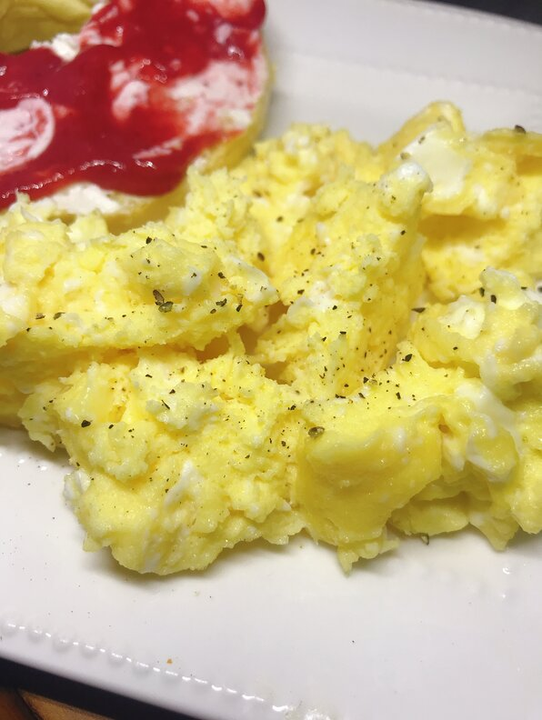

EGGS
okay eggs? really? kinda underwhelming but fuck it ig
- cooking spray
- 8 eggs
- salt and ground black pepper to tast
- Spray a large glass bowl with cooking spray. Crack 1 egg into a small ramekin and then pout into the bowl. Whish egg. Repeat with remaining eggs, whisking well after each addition
- Cook eggs in a microwave for 30 seconds; remoce from oven and stir. Continue Cooking in 30-second intervals, stirring after eacg, until eggs are almost set, about 3 minutes total. Season with salt and pepper.